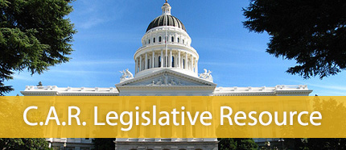

C.A.R.'s Governmental Affairs Team works to advance and support REALTOR® issues in politics, public policy and legislation. Click here to find out more about the REALTOR® Action Fund, how you can get involved, and for the latest legislative news.
{mooblock=Legislative Liaison Program}
The California Association of REALTORS® has a program similar to SDAR's ROC program called the Legislative Liaison Program. C.A.R. Legislative Liaisons receive an e-mail at least once a month to brief members on state legislative issues affecting the industry. Legislative Liaisons are often called upon to respond to C.A.R.'s legislative "Red Alerts" to contact state Assembly and Senate members to support or oppose legislation which will have an impact on the industry and should regularly communicate the information to other agents in your office.
Click here to become a C.A.R. Legislative Liaison.
{/mooblock}